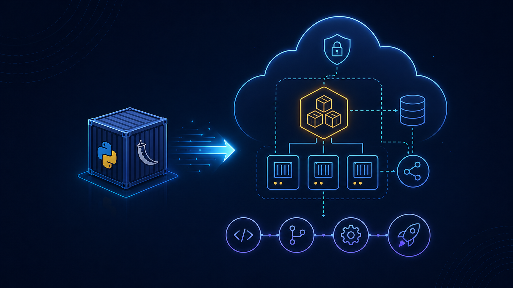

Cloud Engineering · Flask · Docker · AWS
Moving a Containerized Flask App to AWS
How I took a Dockerized Flask course enrollment application from a local development setup to a production-minded AWS deployment using ECS Fargate, MongoDB Atlas, GitHub Actions, OIDC, SSM Parameter Store, and AWS CDK.

I recently took one of my portfolio projects, a containerized Flask course enrollment application, and moved it from a local Docker Compose setup into a real AWS deployment.
On the surface, the app is straightforward: a full-stack Flask application with user registration, login, course browsing, enrollment workflows, MongoDB-backed data models, REST APIs, Swagger documentation, and a Dockerized local development stack. The local version runs with Flask, MongoDB, and a seed container through Docker Compose.
But moving something from "it works locally" to "it runs safely in the cloud" changes the problem completely.
This became less about simply hosting a Flask app and more about answering production engineering questions:
- How should the container run in AWS?
- Where should secrets live?
- How should GitHub Actions authenticate to AWS?
- How do I avoid long-lived cloud credentials?
- How do I make deployments repeatable?
- How do I keep the cost low for a demo app?
- How do I expose the app publicly without exposing the container directly?
The final architecture
The final architecture ended up using several managed services and operational building blocks:
- ECS Fargate for serverless container hosting
- Amazon ECR for Docker image storage
- Application Load Balancer for public HTTP/HTTPS traffic
- MongoDB Atlas M0 for the managed database
-
AWS SSM Parameter Store for
SECRET_KEYandMONGO_URI - CloudWatch Logs for container logs
- GitHub Actions OIDC for keyless AWS authentication
- AWS CDK in Python to codify the infrastructure
The biggest early decision was choosing ECS Fargate over EC2, EKS, or App Runner. I wanted something closer to production container orchestration, but without managing EC2 instances or introducing Kubernetes complexity for a small app. Fargate gave me a clean middle ground: managed compute, ECS integration, and the ability to scale the service down when I am not demoing it.
Preparing the container for production
Before deploying, I had to make the container more production-ready.
The local Docker Compose workflow could keep using
flask run, but the production image needed to serve the
app with Gunicorn instead of Flask's development
server.
That was a small change technically, but an important mindset shift: local development defaults are not production defaults.
I also separated local and production behavior more clearly. Local
Docker development can use development defaults, while the AWS
deployment needs APP_ENV=production, secure session
cookie behavior, and no FLASK_DEBUG in the task
definition.
Treating secrets like secrets
Secrets were another important part of the migration. A MongoDB URI
can look harmless, but an Atlas connection string includes
credentials directly in the URI. That makes
MONGO_URI sensitive, even though it looks like a normal
configuration value.
I chose SSM Parameter Store because it was secure
enough for this use case, free at the standard tier, and avoided
putting sensitive values directly into the ECS task definition.
The app reads SECRET_KEY and MONGO_URI
at startup instead of hardcoding them or committing them anywhere.
Building a deployment pipeline
For CI/CD, I extended GitHub Actions so that merges to
main automatically build the Docker image, push it to
ECR, register a new ECS task definition revision, and update the ECS
service.
The deploy job waits for linting, tests, Docker build, and Playwright end-to-end tests before it runs. The image is tagged with the Git commit SHA, which means every deployment can be traced back to an exact commit.
One of my favourite parts of the project was replacing static AWS access keys with GitHub Actions OIDC. Instead of storing long-lived AWS credentials in GitHub, the workflow assumes an IAM role using a short-lived token.
That is a much cleaner security model and a good habit to build into any cloud deployment pipeline.
Designing the network boundary
The networking work was a good reminder that "public app" should not mean "public container."
The intended traffic path is:
Internet → ALB → ECS Fargate task → MongoDB AtlasThe ECS task runs behind the Application Load Balancer, and the task security group only allows inbound traffic from the ALB. The ALB owns the public entry point, health checks, and HTTP/HTTPS routing.
This gives the app a public URL while keeping the container itself behind a controlled network boundary.
Moving from manual infrastructure to AWS CDK
Later, I moved the infrastructure into AWS CDK using Python. This turned out to be more involved than simply writing infrastructure-as-code from scratch.
I had already created some resources manually, so the cutover required removing the pre-CDK AWS stack, dealing with leftover console-created CloudFormation stacks, bootstrapping the AWS account for CDK, reusing the existing GitHub OIDC provider, fixing Docker asset handling, and correcting stack ordering so ECS waited for the ALB listener and target group association before deploying.
That cutover was a useful real-world lesson: infrastructure-as-code is not just about defining resources. It is about ownership, lifecycle, dependency ordering, repeatability, and safe teardown.
By the end, the app was running as a healthy ECS service with one desired task, one running task, HTTPS access through the load balancer, and a CDK-managed AWS stack.
What I learned
The most valuable part of this project was not any single AWS service. It was the full migration path:
- Start with a local containerized app.
- Replace dev-only runtime assumptions.
- Externalize the database.
- Move secrets into managed storage.
- Put the container behind a real load balancer.
- Add CI/CD with immutable image tags.
- Use short-lived cloud credentials instead of static keys.
- Codify the infrastructure.
- Validate teardown and rebuild.
That is the difference between "I deployed an app" and "I understand the operational path to running an app."
This project gave me hands-on practice across Flask, Docker, MongoDB, ECS Fargate, ECR, ALB, SSM Parameter Store, CloudWatch, GitHub Actions, OIDC, IAM, and AWS CDK.
More importantly, it forced me to think like a production engineer: security boundaries, release traceability, cost control, rollback paths, and infrastructure ownership.